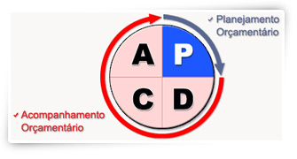

O GMD (Gerenciamento Matricial de Despesa) é o primeiro passo para a implantação de um orçamento de despesas de uma empresa. O objetivo do GMD é o controle de despesas com foco em redução, obtida por meio da análise detalhada da situação atual, identificação e utilização de melhores práticas.
Adicionalmente, o GMD proporciona diversos benefícios qualitativos para a organização, entre eles:
O GMD deve estar alinhado com a formulação estratégica da organização. Tem seu foco na melhoria da operação, visando a atingir as metas orçamentárias e melhorar o indicador final de rentabilidade.
O Coordenador do projeto é o responsável pelo efetivo andamento do projeto, fazendo a ponte entre a equipe do GMD e os gestores das áreas.
A Equipe Externa, trás o conhecimento técnico da metodologia implantada em outras Empresas do Grupo Edson Queiroz, ficando responsável pelo acompanhamento do projeto até o momento que a equipe interna tenha absorvido totalmente a metodologia.
A Equipe Interna que é formada por profissionais do SVM, fornece todo o conhecimento técnico do negócio para a Equipe Externa, absorvendo a metodologia e tendo a responsabilidade de disseminação da cultura para todo o SVM.
Os Gestores de Pacotes são profissionais do SVM, escolhidos para gerenciar grupos de despesas (Pacotes). Seu papel consiste em controlar as despesas em parceria com os gestores de área (Diretores e Gerentes), visando sempre oportunidades de redução dos gastos bem como divulgar as melhores práticas (idéias para redução de despesas) alcançadas em todas áreas do SVM.
A implementação do Gerenciamento Matricial de Despesas é executada por uma equipe mista de técnicos do GMD que participaram da implantação em outras empresas do GEQ e da empresa (SVM).
O objetivo é transferir todo o conhecimento referente à elaboração e ao acompanhamento das metas de gasto, de acordo com os princípios do GMD.
A etapa de elaboração do orçamento tem duração média de quatro a cinco meses. Em seguida, são planejados e implementados os instrumentos de acompanhamento dos gastos. Ao todo, o projeto tem uma duração média de doze meses, com resultados efetivos ao longo deste período.
Todo o projeto está orientado de acordo com o método PDCA (Plan, Do, Check, Action) e está dividido em duas fases, conforme mostra figura abaixo:

O GMD é uma ferramenta trazida pelo INDG (Instituto Nacional de Desenvolvimento Gerencial) implantada na Esmaltec e na Nacional Gás. Absorvida a metodologia, partiu-se para implantação nas demais empresas do GEQ através de equipes internas. A primeira experiência foi na Cascaju, onde o projeto obteve excelentes resultados. Seguindo esta tendência o SVM está sendo a segunda empresa a implantar o GMD.